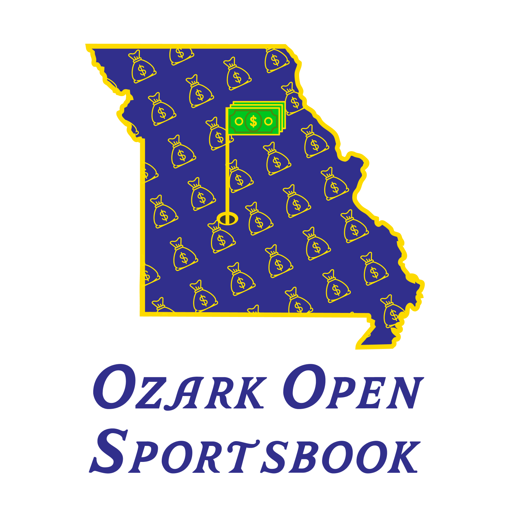

The state of Missouri, tiled with money bags, with a golf flag through the hole — clubhouse meets sportsbook. Indigo #312F8C, gold #FDDA00, money green.
Wordmark is set in Azalea. Clear space: keep at least the flag-height around all sides.